Kualitas yang membawa
dampak positif.
Menjadi perusahaan manufaktur terkemuka untuk produk higienis berkualitas unggul dan memberikan dampak positif di Indonesia serta dunia.
Dari langkah pertama si kecil hingga kenyamanan orang tersayang. Kenali rangkaian produk higienis PT Aman Indah Makmur.
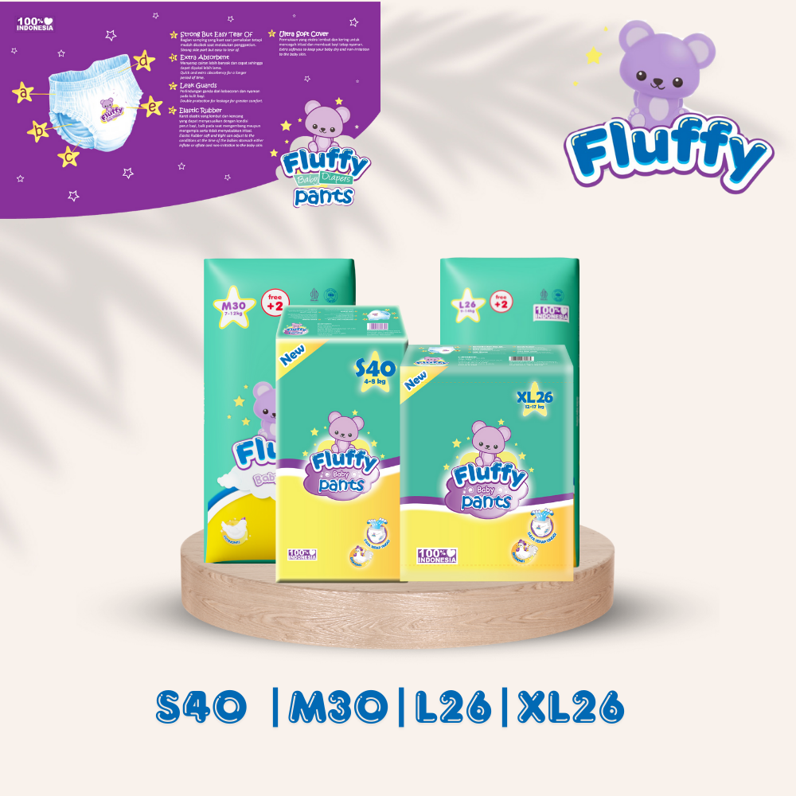
Fluffy Baby Pants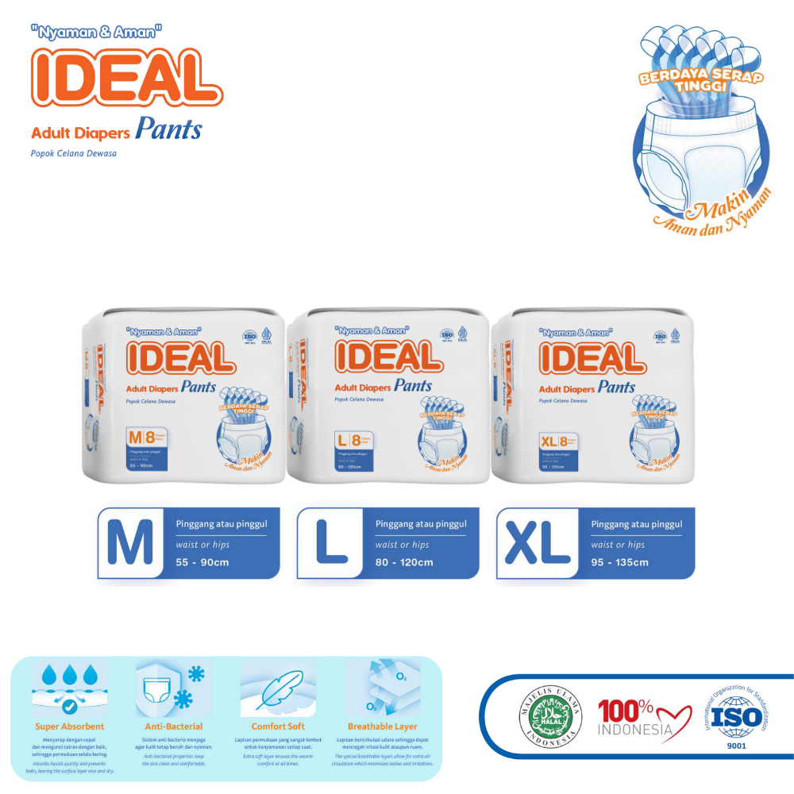
Peduli di setiap usia.Lebih dekat dengan
merek pilihan Anda.
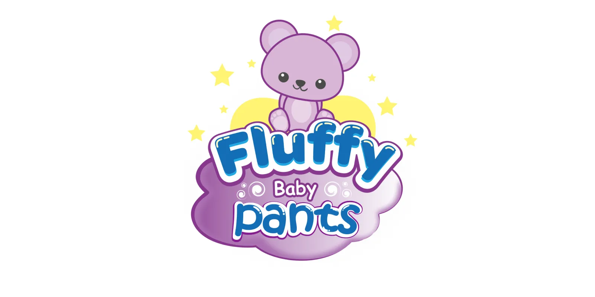
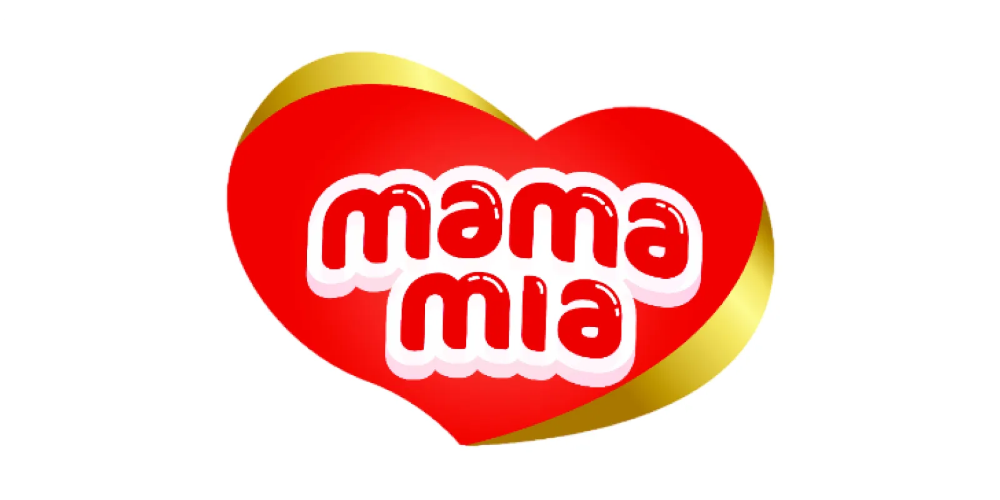
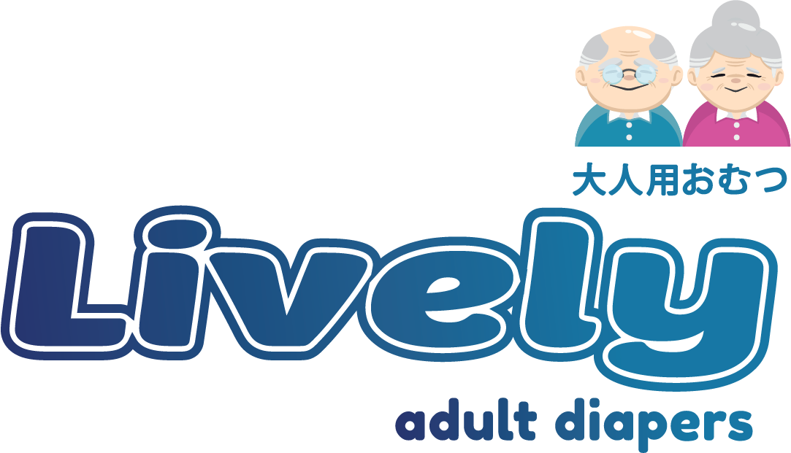
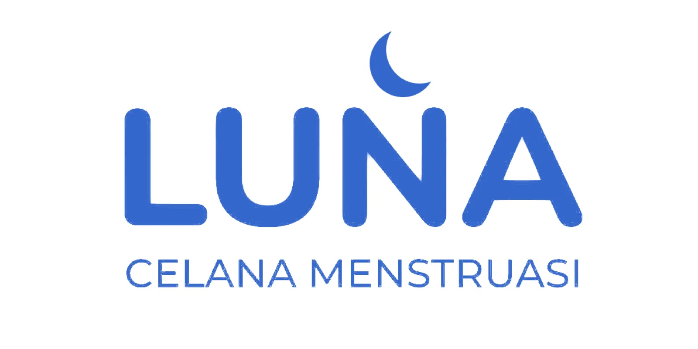
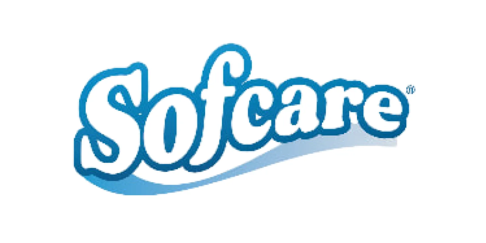
01 / TENTANG PERUSAHAAN
Di balik setiap produk, ada komitmen untuk menghadirkan kebutuhan higienis yang lebih mudah dijangkau.
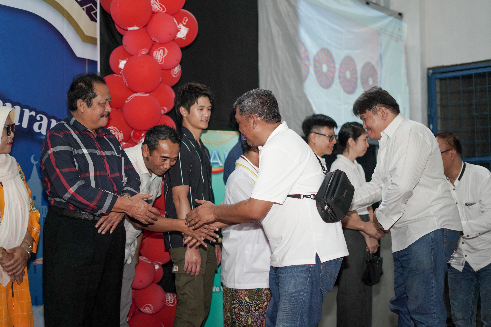
Dokumentasi kegiatan AIM
Batang · April 2026
PT Aman Indah Makmur (AIM) bergerak dalam manufaktur popok dan produk higienis. AIM menghadirkan produk dengan merek sendiri serta layanan maklon untuk kebutuhan mitra.
Berpusat di Semarang, perjalanan AIM berkembang bersama kebutuhan masyarakat. Pada 2026, perusahaan meresmikan pabrik ketiganya di Batang.
Menjadi perusahaan manufaktur terkemuka untuk produk higienis berkualitas unggul dan memberikan dampak positif di Indonesia serta dunia.
01 Produk berkualitas dengan harga kompetitif.
02 Lingkungan kerja yang aman dan mendukung.
03 Kepercayaan mitra dan bisnis berkelanjutan.
04 Kontribusi positif untuk masyarakat.
AIM memulai produksi popok bayi dengan merek Mamamia.
Pengembangan produk popok celana, Fluffy, serta tisu basah.
Pengembangan produk popok dewasa melalui merek IDEAL.
Peresmian pabrik ketiga di Batang, Jawa Tengah.
02 / RANGKAIAN PRODUK
Temukan pilihan untuk bayi, dewasa, perawatan keluarga, hingga hewan kesayangan.
Coba nama merek lain atau tampilkan semua kategori.
Pilihan produk pada katalog ini bersumber dari AIM. Buka detail produk untuk melihat pilihan di Shopee.
03 / DI BALIK PRODUK
Dari bahan baku hingga pengemasan, proses yang terkoordinasi menjadi bagian penting dalam menghasilkan produk higienis.
Ringkasan alur produksi berdasarkan laporan KP PT AIM (2024).
Memeriksa bahan, jumlah, serta kesiapan peralatan sesuai kebutuhan produksi.
Membentuk lapisan penyerap dan menyatukan komponen produk.
Menyesuaikan bentuk, ukuran, dan komponen pengikat produk.
Memeriksa hasil produksi dan karakteristik produk sesuai standar perusahaan.
Mengemas produk untuk mendukung penanganan dan distribusi.
04 / TUMBUH MELALUI KEMITRAAN
Kenali layanan manufaktur yang mendukung pengembangan produk higienis dengan merek Anda.
Untuk mitra yang telah memiliki merek, desain, dan spesifikasi produk. AIM mendukung proses manufaktur dari bahan baku hingga produk jadi.
WUJUDKAN PRODUK ANDAMemulai dari pilihan spesifikasi produk yang telah dikembangkan AIM, kemudian memproduksinya dengan merek milik mitra.
KEMBANGKAN MEREK ANDAPendampingan proses pengurusan sertifikasi izin edar untuk mendukung kesiapan produk sebelum dipasarkan di Indonesia.
PERSIAPKAN LANGKAH ANDAPunya rencana produk higienis?
Mari mulai dari sebuah percakapan.
05 / STRUKTUR PERUSAHAAN
Bagan PT Aman Indah Makmur dari laporan kerja praktik tahun 2024.
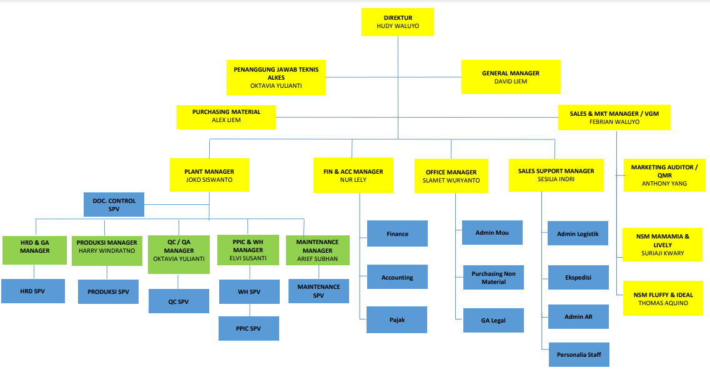
06 / CERITA DARI AIM
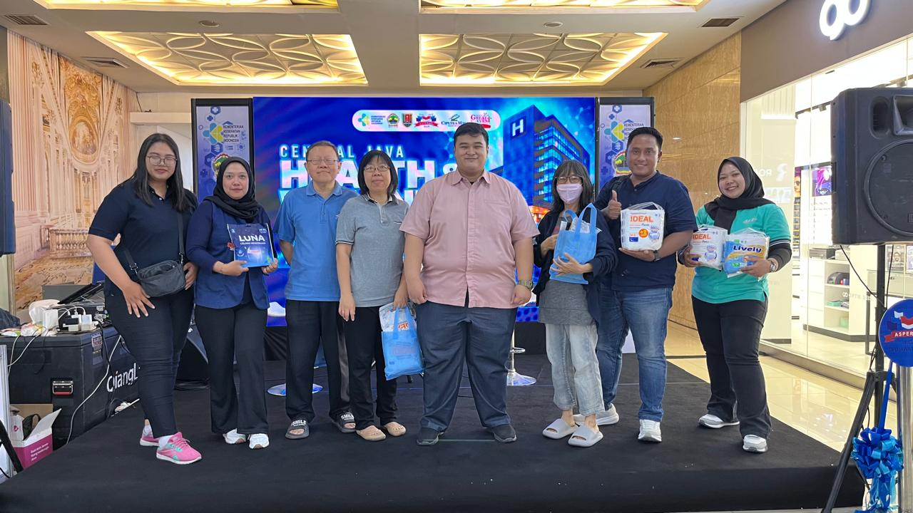
KEGIATAN03 OKTOBER 2026
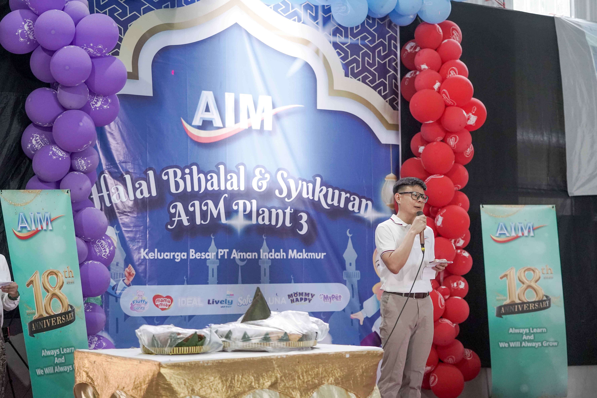
PERUSAHAAN06 APRIL 2026
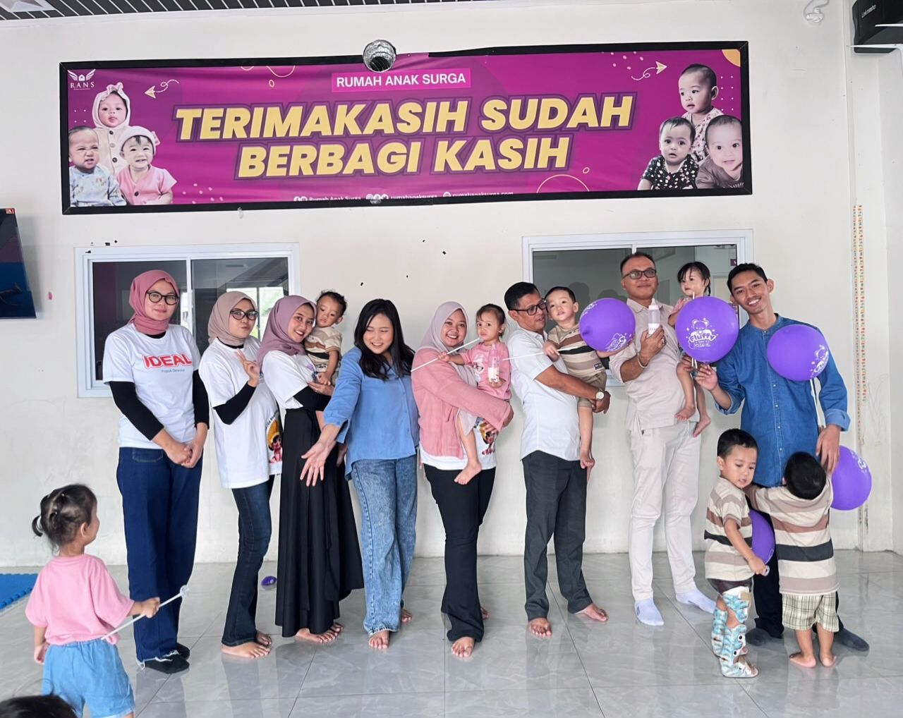
KEPEDULIAN12 MARET 2026
07 / MARI MENGENAL LEBIH DEKAT
Beberapa jawaban untuk membantu Anda mengenal AIM dan layanannya.
AIM merupakan perusahaan manufaktur popok dan produk higienis, dengan merek sendiri serta layanan maklon OEM dan ODM.
Katalog menampilkan pilihan popok bayi, popok dewasa, celana menstruasi, underpad, dan popok hewan. Pilih kategori atau cari nama merek untuk menemukan produk.
Ya. AIM menawarkan layanan OEM dan ODM. Tim perusahaan dapat membantu menjelaskan pilihan layanan sesuai kebutuhan dan kesiapan produk Anda.
Situs resmi AIM menyebutkan bahwa desain produk dan kemasan tidak tersedia secara internal. Untuk kebutuhan desain, diskusikan rekomendasi mitra dengan tim AIM.
Untuk simulasi praktikum, hubungi Dimas melalui email dimasbusinesshub@gmail.com atau WhatsApp 0851-9001-2056. Sampaikan jenis produk dan kebutuhan Anda.
08 / MARI TERHUBUNG
Kontak pengujian website praktikum.
Pesan diterima oleh Dimas Prawiratama.